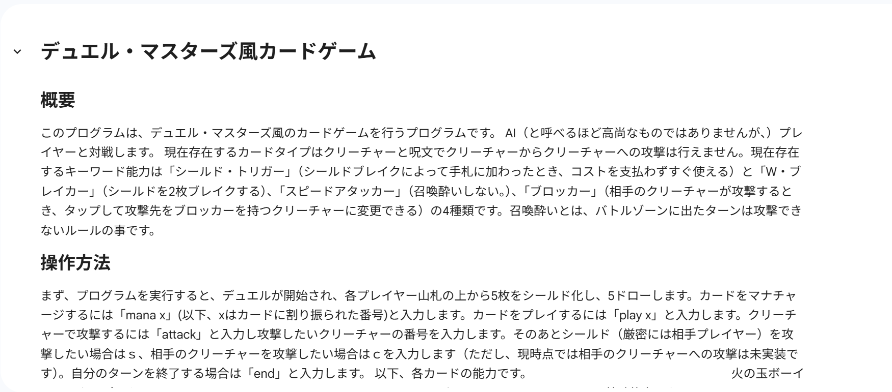
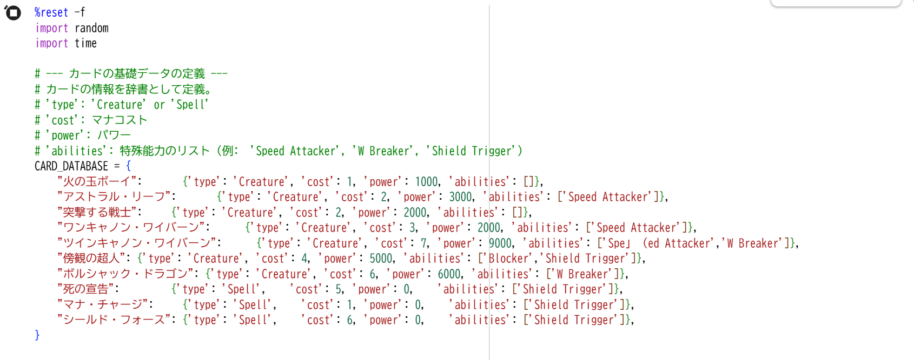
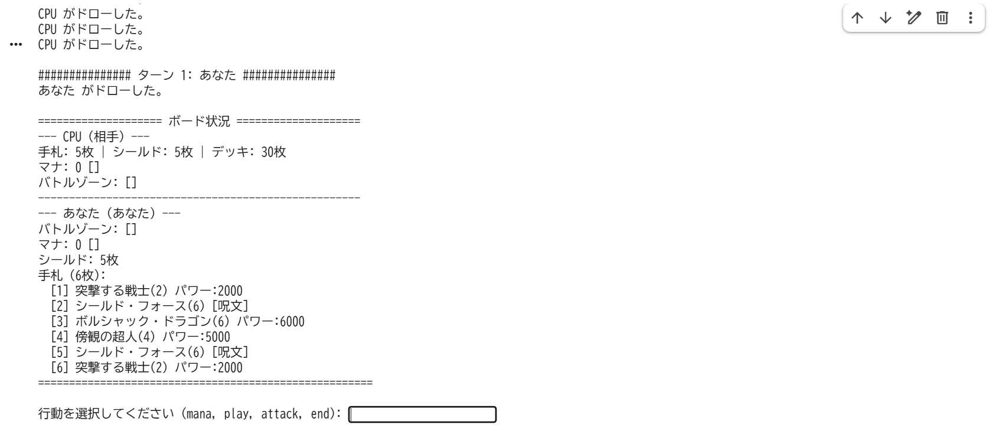
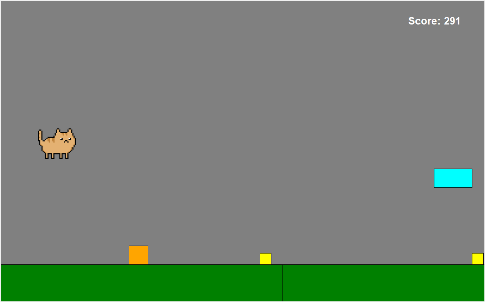

自己紹介
大阪公立大学工業高等専門学校２年知能情報コースに所属する17歳の学生。
趣味はデュエル・マスターズ、ピアノ。
経歴
2008年：誕生
2012年：ピアノを始める（始めた理由は不明）
2017年：近所のプログラミングスクールに通い始め、
ロボットプログラミングやscratchに触れる。
ほぼ同時にデュエル・マスターズに出会う。
以降、デュエル・マスターズに魂を奪われる。
2021年：4年通ったプログラミングスクールを辞めるが、プログラミングには触れ続ける。
2024年：大阪公立大学工業高等専門学校に入学する。
2025年：大阪公立大学工業高等専門学校2年生に進級し、知能情報コースに配属される。
スキル
・Python・C言語
・Arduino
・Deeds
・Cisco Packet Tracer
・Wireshark
これまでに作成したもの
デュエル・マスターズ風カードゲーム
デュエル・マスターズのルールーを真似て作成したカードゲーム。コマンドで操作する。
デュエル・マスターズ風カードゲームのサイトへ移動する
このゲームの説明

このゲームのプログラム

このゲームが動いてるところ
CATRUN

バグで画像が消し飛んでいますが気にしないで下さい...
#1：概要
このゲームはねこを操作して、障害物をよけつつ進むゲームです。
#2：操作方法
操作方法は、上キーでジャンプ、ｓキーで急降下の２つのみです。
#3:ゲームシステム
空中で上キーを押すことで２段ジャンプができ、地面に着地すると２段ジャンプが復活します。
ねこは勝手に進み、加速や減速、停止をすることはできません。
生き残れば生き残るほど、スコアを稼ぐことができますが、同時に障害物の密度も上がっていき、難易度が上昇します。
プレイしたい場合は、以下からexeファイルをダウンロード。
MiniatureTank
PythonとPygameで制作した2Dシューティングゲームです。小さな戦車を操作して敵を倒し、ステージクリアを目指します。
特徴
スクロール型の2Dシューティングゲーム
タイミングよくダッシュすることで敵の攻撃を回避するとジャスト回避
メニュー画面やキーボードとマウスによる操作
動作環境
Windows 10 / 11
Python 3.11 以上（ソースコード実行時）
Pygame 2.6.1
東方風シューティングゲーム
PythonでPygameを使用して作成したゲームです。
上下左右キーで移動、Zキーでショット、Shiftキーを押しながら移動で低速移動ができます
ボムはありません、残機は1機のみです